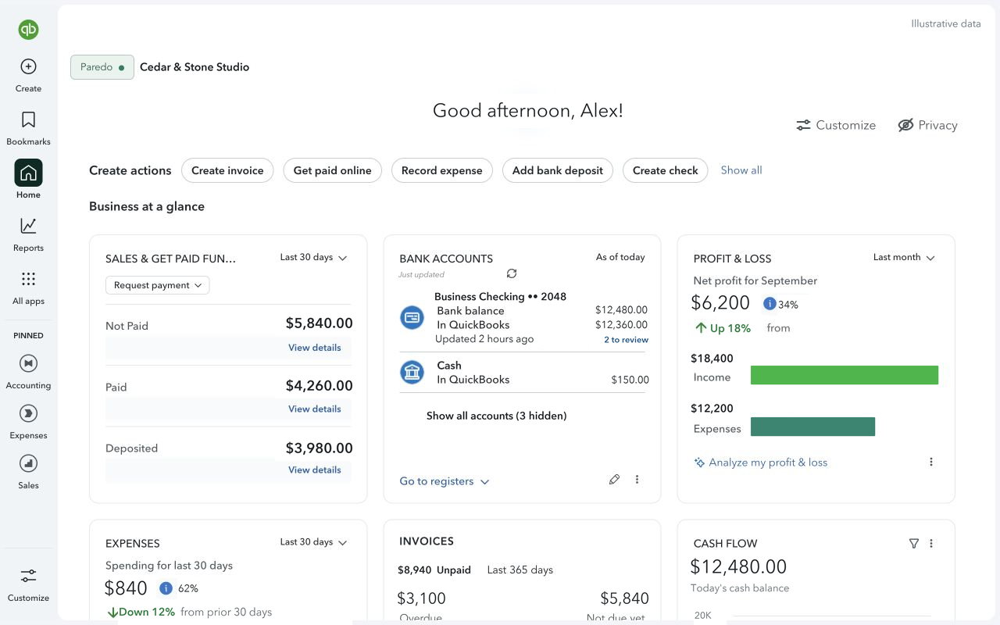
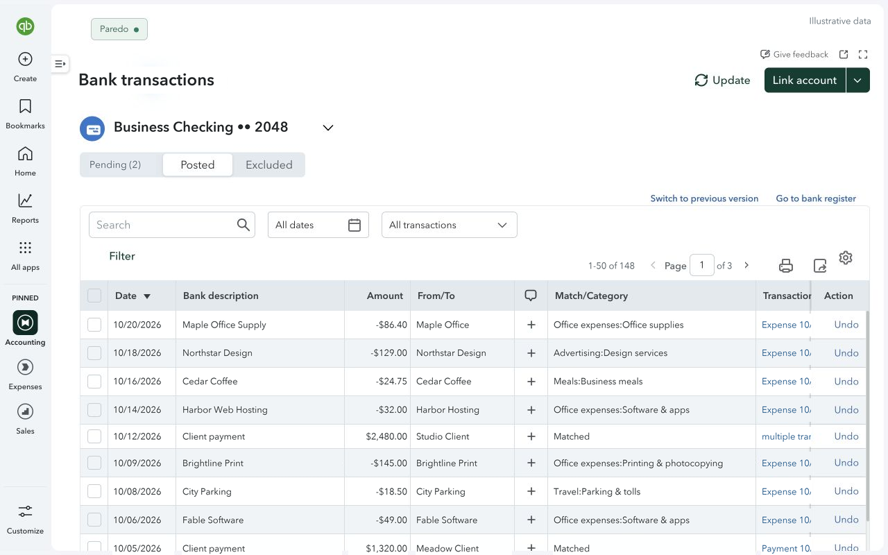
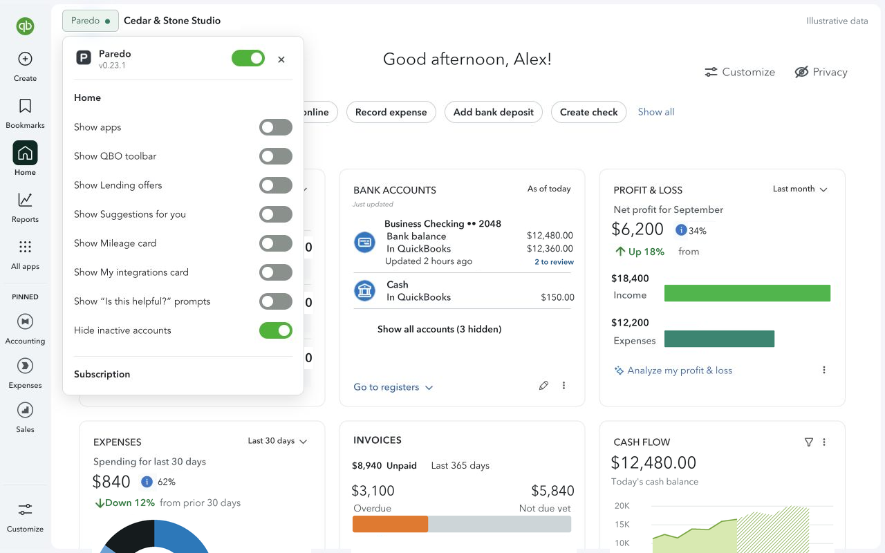

Fewer sales pitches.
More breathing room.
Tuck away supported promotional popups, ads, and upsells. Important warnings and unrecognized dialogs remain available.
A Chrome extension for QuickBooks Online
For owners who keep their own books. Hide supported promotions, simplify crowded screens, and choose what stays in QuickBooks Online.
14 days free. No card required. Then US$24/year plus applicable taxes if you subscribe. Confirm your email to start; the trial never converts automatically.
Your accounting records stay unchanged. No QuickBooks page content is sent to us. How your data is handled
See Paredo in use
Home, Bank Transactions, and the controls that let you choose what stays.



The same screenshots used in our Chrome Web Store listing, captured with Paredo 0.23.1. Identifying details and financial values have been replaced with illustrative data.
A little less in the way
The clutter around them doesn’t. Paredo makes small, considered changes to selected QuickBooks Online screens.
Tuck away supported promotional popups, ads, and upsells. Important warnings and unrecognized dialogs remain available.
Trim crowded headers, extra account cards, and secondary controls so your tables and figures have more space.
Choose visibility options from the Paredo menu on each supported screen. Switch it off whenever you want the native layout.
Home · Bank Transactions · Bank Register · Chart of accounts · Invoices · Bills · Vendors · Customers · Sales & Expense transactions · Reconcile setup · Selected reports
Coverage varies by QuickBooks account and interface. Paredo is an evolving project; QuickBooks updates can affect compatibility.
How it works
Install from the Chrome Web Store. Keep using your own QuickBooks Online account.
Open a supported QuickBooks screen, open the Paredo menu, and choose Start 14-day trial. Confirm your email through ExtensionPay. No card required.
Use the screen’s Paredo menu to reveal optional controls. Your display choices are saved in this Chrome profile. Switch Paredo off for a screen whenever you need the native layout.
Your books stay your books
Paredo changes the view in your browser. It doesn’t post, categorize, or edit accounting records.
Full privacy policy ↗Simple annual pricing
One subscription for one person, across their QuickBooks companies and browser installations.
$24 USD / year
Start with a 14-day free trial.
No card required. Confirm your email to begin.
The trial never converts to a paid plan automatically. A subscription renews annually until canceled, plus applicable taxes. Cancel from the Paredo menu; access continues through your paid term. Uninstalling doesn’t cancel billing.
Full refunds within 30 days of a purchase or renewal. Email us for help.
Subscription termsA few practical questions
Yes. Paredo is a Chrome extension for selected QuickBooks Online screens. It requires your own QuickBooks Online access and does not replace QuickBooks.
Home, Bank Transactions, Bank Register, Chart of accounts, Invoices, Bills, Vendors, Customers, Sales and Expense transactions, Reconcile setup, and selected reports. Coverage varies by account and interface. QuickBooks updates can affect compatibility.
Paredo targets recognized promotional popups, ads, and upsells on supported screens. Important warnings and unrecognized dialogs remain available. It does not promise to remove every promotion.
Yes. Switch Paredo off for the screen from its menu to return to the native layout. You can also reveal supported optional controls individually. If a screen looks wrong, turn Paredo off and contact support.
No QuickBooks page content is sent to Spring Harbor Studios or our billing providers. Paredo reads visible page content locally to adjust the display. Trial and payment information are handled separately, as explained above and in the privacy policy.
Your trial lasts 14 days after email confirmation and never converts automatically. Subscribe if you want to continue using Paredo. Without active access, QuickBooks remains usable in its native layout.
One subscription covers one person across their QuickBooks companies and browser installations. Use Restore paid access with your purchase email on another installation. Display preferences stay local to each Chrome profile.
A paid subscription renews annually until canceled. Use Manage subscription in the Paredo menu to stop renewal; access continues through your paid term. Uninstalling does not cancel billing. Full refunds are available within 30 days of purchase or renewal. Contact support for help.
Paredo focuses on the view around your bookkeeping. It does not automate accounting decisions, repair bank connections, or provide batch transaction tools.
14 days free. No card required. Then US$24/year plus applicable taxes if you subscribe.
Find your way to a calmer workspace
Separate crowded screens, navigation friction, and accounting questions. Find the help that fits.
Start with Intuit’s preferences, then explore options for supported in-page promotions.
Choose the widgets you need and see where Paredo’s visibility settings can help.
Made by Spring Harbor Studios. Questions or a screen that needs attention? support@springharborstudios.com
For support, include the screen name and extension version. Redact private information from screenshots.